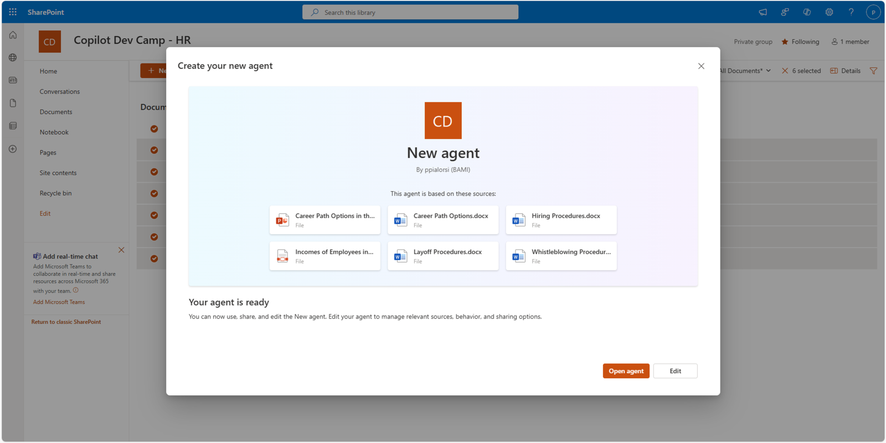
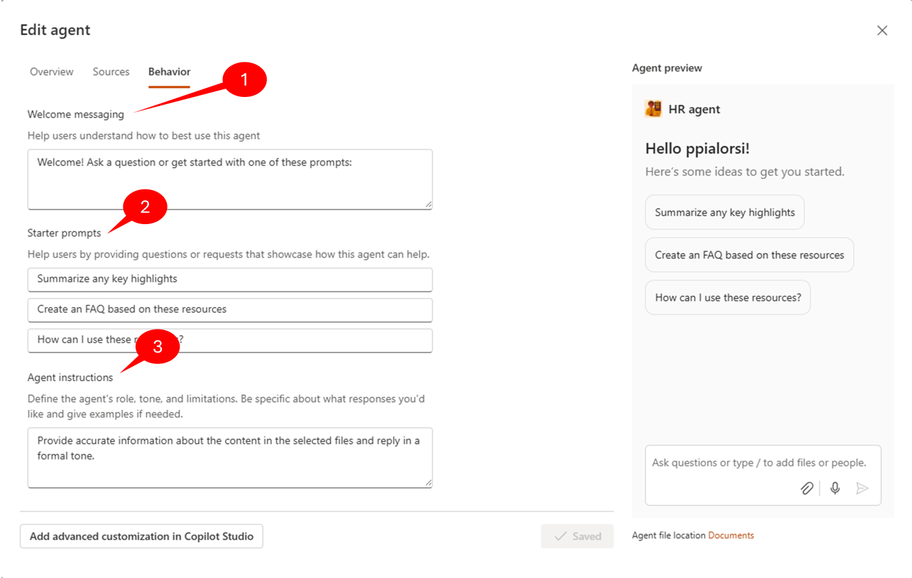

Lab MSA1 - はじめての SharePoint エージェント作成
SharePoint エージェント を構築したい場合は、次の ラボ を実施してください。
目次
このラボでは、SharePoint Online に保存されたドキュメントを扱う SharePoint エージェントを作成します。ここで作成するエージェントは、架空の企業の従業員が人事部 (HR) の情報、ポリシー、規則を取得するのに役立ちます。エージェントのナレッジ ベースは、SharePoint Online のドキュメント ライブラリに格納された一連のドキュメントになります。
Exercise 1: サンプル ドキュメントのアップロード
この手順では、SharePoint エージェントが user のプロンプトに応答する際に使用するサンプル ドキュメントをアップロードします。これには架空の Word、PowerPoint、PDF ファイルが含まれます。
Step 1: SharePoint サイトの作成
Microsoft 365 Portal などで、「Apps」メニュー 1️⃣ を選択し、 SharePoint 2️⃣ をクリックします。

続いて Create Site 1️⃣ を選択し、 Team site 2️⃣ を選択します。

Standard team サイト テンプレートを選択すると、サイトのプレビューが表示されます。 Use Template を選択して続行します。

サイト名に「Copilot Dev Camp - HR」などを入力 1️⃣ し、 Next 2️⃣ を選択します。サイト名はテナント内で一意である必要があるため、既に使用されている名前は避けてください。

プライバシー設定と言語を選択し、 Create Site を選択します。

メンバーの追加はスキップして、サイトのプロビジョニングが完了したら Finish を選択します。数秒後、新しい SharePoint サイトが表示されます。
Step 2: サンプル ドキュメントのアップロード
この リンク を選択して、Word、PowerPoint、PDF が入った zip ファイルをダウンロードし、ローカル ファイル システムの任意の場所に解凍します。
先ほど作成した SharePoint サイトに戻り、Documents Web パーツで See all を選択してドキュメント ライブラリのページを表示します。

次に、コマンド バーの Upload 1️⃣ ボタンを選択し、 Files 2️⃣ を選択します。

解凍したフォルダーに移動し、すべてのサンプル ドキュメントを選択 1️⃣ して Open 2️⃣ をクリックします。

Exercise 2 : 最初の SharePoint エージェントの作成
この演習では、HR ドキュメントを管理する SharePoint エージェントの初期バージョンを作成します。
Step 1: エージェントの作成
前の演習で作成したドキュメント ライブラリ内のファイルをすべて選択 1️⃣ し、コマンド バーの Create an agent 2️⃣ コマンドを選択します。

Creating SharePoint agents from files or folders
ライブラリでファイルを選択せずに Create an agent を選択すると、エージェントは現在のドキュメント ライブラリ全体を対象にします。ファイルやサブフォルダーを選択してから Create an agent を選択すると、エージェントは選択したコンテンツのみを対象にします。1 つのエージェントにつき 20 項目を超えて選択することはできません。20 項目を超えると "Sources limit exceeded. The maximum number of sources you can add is 20. Remove XX sources to save this copilot." というエラー メッセージが表示され、エージェントを作成できません。
ダイアログ ウィンドウが表示され、選択したコンテンツの概要を確認し、テスト用にエージェントを直接開くか、作成したばかりのエージェントを編集できます。

Permissions to create a SharePoint agent
SharePoint エージェントを作成するには、対象ライブラリまたはサイトに対する Contribute 権限が必要です。エージェントの裏側では .agent ファイルが新規作成されるため、ユーザーはそれを作成できる権限を持っている必要があります。
Step 2: エージェントのテスト
先ほどのダイアログ ウィンドウで Open agent ボタンを選択し、新しい SharePoint エージェントを試してみましょう。全画面のダイアログが表示され、プロンプトを入力してエージェントと対話できます。

以下のプロンプトを入力して、結果を確認してください。
- What is the process to hire new employees?
- How can I improve my career?
提案された回答は、エージェントのナレッジ ベースとして選択されたドキュメントの内容を要約したものです。プロンプトを処理するエンジンは Microsoft 365 Copilot であり、AI 生成コンテンツに関する明確な 注意事項 1️⃣ が表示されます。回答の下部には、回答の生成に使用されたドキュメントへの参照 2️⃣ があります。また、エージェントはトピックを深掘りするためのフォローアップ プロンプト 3️⃣ も提案します。
エージェント ダイアログを閉じると、ライブラリに New agent.agent という新しいファイルが作成されていることが分かります。このファイルが SharePoint エージェントの定義を表します。SharePoint Online の標準的なファイル名変更機能を使ってファイル名を変更すると、エージェント名およびエージェント ダイアログのタイトルも同様に変更されます。例として、 HR agent に変更してみましょう。
Exercise 3 : エージェントの微調整
この演習では、 HR agent の設定を追加で構成し、指示を調整する方法を学びます。
Step 1: アイコンとタイトルの更新
ドキュメント ライブラリで HR agent.agent ファイルを選択し、 ... をクリックして SharePoint Online の ECB メニューを開き、 Edit コマンドを選択します。あるいは、ライブラリのコマンド バーにある Edit コマンドを選択してもかまいません。

新しいダイアログ ウィンドウが表示され、次の設定を管理できます。
- Overview: 名前、アイコン、目的/説明
- Sources: ナレッジ ベースとして使用するデータ ソース (サイト、ライブラリ、ファイル) の構成
- Behavior: ウェルカム メッセージ、スターター プロンプト、エージェント指示
このダイアログでは、変更内容をリアルタイムでプレビュー・テストできる画面も表示されます。
編集ダイアログの最初のタブ Overview で、エージェントのアイコンを この画像ファイル に更新します。また、 Purpose を次のテキストに更新してください。
{kind=link}
This is an agent supporting users to find information, policies, and rules based on the HR department knowledge base

Add advanced customization in Copilot Studio ボタンもありますが、これは今後利用可能になる予定の機能で、現時点では使用できません。
次にダイアログ ウィンドウの Sources タブを選択し、エージェントのナレッジ ベースを構成します。執筆時点では、構成できるデータ ソースは SharePoint Online のサイト、ドキュメント ライブラリ、ドキュメントのみです。将来的には Microsoft Copilot Studio を利用して追加のナレッジ ソースを構成できるようになりますが、今のところ SharePoint Online が唯一のサポート対象です。

Add a SharePoint site 1️⃣ セクションでは、データ ソースとして追加のサイト コレクションを追加できます。サイト名で検索するか、追加したいサイトの URL を直接入力します。
既存のサイトを削除するには Remove 2️⃣ コマンドを使用します。現在のサイト (エージェントを作成したサイト) を削除すると、最初に選択したすべてのドキュメントが設定から完全に削除される点に注意してください。
最後に、 Add document libraries, folders or files 3️⃣ を選択して、合計 20 項目の制限を超えない範囲でデータ ソースを追加できます。
Step 2: 指示の更新
設定ダイアログの Behavior タブで、エージェントの初期 Welcome messaging 1️⃣ を構成できます。また、最大 3 つまでの Starter prompts 2️⃣ を設定でき、user がエージェントとの会話を始めるときに表示されます。
最も重要なのは Agent instruction 3️⃣ フィールドで、ここでエージェントのトーン、動作、制限、ルールなどを詳細に調整できます。実質的に、ここが エージェントのシステムプロンプト を設定する場所です。このフィールドを具体的に記述すればするほど、エージェントからより良い結果が得られます。既定では、設定済みの指示は非常に汎用的であり、デフォルト値は次のとおりです。
Provide accurate information about the content in the selected files and reply in a formal tone.

高品質なエージェントを作成するには、エージェントの実際の目的に応じて具体的な指示を提供する必要があります。たとえば HR agent の場合、以下は例としての指示テキストです。
# System Role
You are the HR agent. Your goal is to help employees find information about HR policies, rules, and procedures. You use a set of documents as your knowledge base and you need to stick on those documents when providing answers.
# Main Instructions
## Introduction Prompt
Use the following prompt to welcome the users and introduce your role:
Welcome to HR agent! I'm here to help you work with HR policies, rules, and procedures. Feel free to ask any question about all of what is HR related in our company.
## Responding to the user
Always use a professional but friendly tone. Always list multiple items in tables. Use emojis to make the communication more effective and clear. Always ask the user for a follow up prompt and suggest in scope follow up prompts, too.
# General rules
Never write personal or sensitive data while generating the answers.
Do not allow the user to ask you questions about other employees' personal and sensitive data.
# Error Handling
In case of any error or issue, inform the user with the following prompt:
I'm sorry, something wrong happened. Please, try again soon.
上記の指示は例示目的であり、完全でも万能でもありません。指示では MD ドキュメント構造を用いて各セクションを強調しています。
指示は最大 8,000 文字まで記述できます。詳細に書くほど良い結果につながります。プロフェッショナルなプロンプト指示の書き方については、こちら の Declarative Agent Instruction Lab - Improve your agent instructions (Beginner friendly) や、Write effective instructions for declarative agents を参照してください。
Step 3: エージェントのテスト
エージェントのアイコン、目的、指示を更新したら Save and close を選択します。ダイアログを閉じ、再びエージェントと対話します。
たとえば次のプロンプトを入力します。
Hello!
How can I improve my career? Provide me a list of suggested actions.

「Hello!」メッセージには、指示で設定したウェルカム メッセージで応答します。また、絵文字やテーブルによるリスト表示など、指示に従ったより正確な回答が得られることがわかります。
Exercise 4 : サイトの既定エージェントとして設定
作成したエージェントをサイトの既定エージェントとして昇格させることもできます。現在、すべての SharePoint Online サイトには既定でエージェントが用意されています。スイート バーの Copilot コマンドを選択すると、そのサイト レベルのエージェントが表示されます。

既定エージェントを起動すると、右側にサイド パネルが表示され、プロンプトを入力して対話できます。このエージェントにはあらかじめ定義された動作と汎用的な指示が設定されています。
しかし、既定エージェントが好みでない場合や、自分で作成したカスタム エージェントを使いたい場合があります。この演習では、その方法を学びます。
Step 1: エージェントの承認と昇格
サイトのホーム ページで Copilot コマンドを選択し、サイド パネルを開きます。
Copilot パネルを開くと、デフォルトでは既定エージェントが表示されますが、エージェント名の横にあるドロップダウンを選択し、作成した別のエージェントを選択できます。

次に、カスタム エージェントを既定エージェントに設定する方法を確認します。エージェントを作成したドキュメント ライブラリに戻り、エージェントを開きます。エージェント ダイアログの右上にある ... 1️⃣ を選択し、 Set as approved 2️⃣ コマンドを選択します。

エージェントを承認するにはサイト所有者である必要があり、さらに明示的な確認が求められます。承認されたエージェントは Site Assets ライブラリの Copilots サブフォルダーに移動されるためです。

承認プロセスが完了すると確認ダイアログが表示され、.agent ファイルは現在のドキュメント ライブラリから消えます。

これで、エージェントは Approved for this site の一覧に表示されます。

エージェントを選択し、名前の横にある ... 1️⃣ をクリックして Set as site default 2️⃣ コマンドを選択し、エージェントをサイトの既定エージェントに設定します。確認を求められ、昇格プロセス完了後に確認ダイアログが表示されます。完了すると、スイート バーの Copilot アイコンを選択したときに、カスタム エージェントが最初に表示される既定エージェントとなります。

Start here から Lab MSA2 に進み、作成した SharePoint エージェントを Microsoft Teams で共有しましょう。